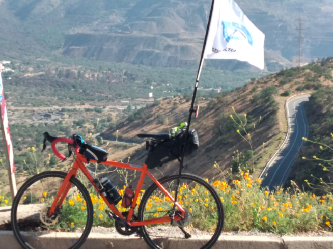

-
Desafío 200 km 3x3 - Resultados

Estamos sacando cálculos
Nos encontramos cuadrando cifras actualmente. A cada equipo se le envió un correo con el formulario final para oficializar el registro con sus link de strava. Recuerden dejar la activididad pública para que podamos validar el desnivel.
Los resultados serán publicados junto con la premiación y el sorteo el día miércoles 13 de mayo.
Atentos a ver cuántos equipos lograron superar los 3 niveles que se presentaron:


Los equipos con ü§î no han sido verificados aún porque no los hemos recibidos, el link está privado, o no los hemos encontrado (última actualizaci√≥n 16:20 domingo 9)
Desnivel Nombre equipo Lara Biker's Alpargata Team The Drink Team (Lara Biker's) ü§î Perros Salvajes TEAM 5 AM Cabras del monte Team VLP TeamPencaBike TEAM PRAXIS Los Ciclosherpas Los gochos team lara bikers Los escuelitos Los Facheritos Plano Falso 1,2,3 por ti! Malatesta Audax Club ü§î Lara Biker's Venezuela Los Desconocidos Pedalocos Mu√±ecxs Mix ü§î Arackar GIRL's FULL AM Es lo que hay Forever Bike ü§î Pichurrias Team Mafuba.veganfood EligeVivirEnLaOscuridad ü§î Los ruteros ü§î Sin PR no vale DDRR Team Pump it ü§î Team CCB NICERs team mapu 1 Salior Team Pedalea hoy si quieres hacer la diferencia ma√±ana Los cuchufletas Xtreme team Los Palominos Los Sin Permiso Los shiquititos Los Narutos The Rollers MTB ü§î Audax-Húsares Team Team Foreveryoung ü§î Los malos pa' subir The Killers CCFUGA - Cern√≠calo Valeeex3 Los Papayas con Smog Biketribe Apotop√© Bici Club CCFUGA - Peuco La pichimota CS-FLOW Greyhound proyect ü§î Monta√±istas de escritorio Mankebike Ciclismo RNK Jaufbike Los PR SinMusloBike Cadena sucia Rueditas solidarias Team On Fire Tres generaciones ECUCH Guau Guau Guau ü§î LowperfilTEAM Team completo RC RACING BCC bichotas cyling club Los sin subida ¬°Atentos al instagram de la escuelita @quenotefalteaire para el pr√≥ximo desaf√≠o!
-
Desafío 3x3 Altimetría
Desafío 3x3 en su segunda versión, esta vez pondremos a prueba tus capacidades para escalar. Quién se anima? El sábado 8 de mayo cada equipo, conformado por 3 integrantes, debe registrar una ruta libre de 6 a 9 de la mañana. No es necesario que los integrantes del equipo estén juntos.
Esta vez lo que importa son los metros subidos, no tus kilómetros. Tendrémos 3 niveles a superar y la suma de la altimetría de los 3 integrantes debe ser igual o mayor a la altura de cada nivel:
- Nivel 1 Volcán Puntiagudo 2493 mts.
- Nivel 2 Cerro el Plomo 5424 mts.
- Nivel 3 Nevado Ojos del Salado 6893 mts.
Por ejemplo, para que un equipo alcance el nivel 2 del Cerro el Plomo deberían hacer, en promedio, 1808 m de desnivel por persona. El equivalente a 600 m por hora. Alcanzable?

INSCRIPCIONES CERRADAS
72 equipos inscritos
Motívate, participa y comparte!
-
Desafío 200 km 3x3 - Resultados

Recaudación
Entre los 162 equipos que participaron con inscripciones y los aportes externos a modo de donación logramos recaudar un total de $1.700.000.
Damos las gracias a Velo Boutique, Travel & Gravel Bikes, Oh my bike!, Duck Bike Chile, Mardones Bikepacking, WOCCH - Women’s Cycling Chile, Brevet Chile, OMC y a un aporte anónimo por haber colaborado con los premios.

De los casi 500 ciclistas que participaron, 130 fueron mujeres. Tuvimos inscritos desde los 14 a los 64 años, con un promedio de 32 años y con todo tipo de bicicletas: ruteras (mayoría), gravel, triatlón, mtb, cx, urbana y piñón fijo.
Premios
Entre los premios se encuentra el reconocimiento a mayor kilometraje y también formato de sorteo al azar entre los equipos que nos enviaron sus registros de ruta.
- Equipo mayor distancia (349.22 km)
Timothy Ruedlinger, Sebastián Araya y Marcos Bueno (Los Bebos)- Mujer mayor distancia (87.47 km)
Tamara Santander (Team 5AM)- Hombre mayor distancia (121.5 km)
Abraham Paredes (PichurriasCycling)- Sorteo equipo 1
Francisco Valenzuela, Marco Sans y Harlet Villegas (Los Sin Permiso)- Sorteo equipo 2
Daniel Tovar, Michael Parra y Maikel Ramírez (The Drink Team, Lara Biker's)- Sorteo ciclista 1
Jaeel Moraga (Abawinile)- Sorteo ciclista 2
Jean Muñoz (Los Fixones)- Sorteo al esfuerzo
Ariel Torres (Los memos bike)Los ganadores serán contactados por interno para hacer la entrega de los premios.
Resultados
Valoramos y agradecemos cada kilómetro aportado por los participantes, desde aquellos que no lograron sumar los 200 km que planteaba el desafío hasta los pocos que superaron los 300 km por equipo.
¡Atentos al instagram de la escuelita @quenotefalteaire para el próximo desafío!

* Si te perdiste el en vivo del sorteo, lo puedes encontrar acá.
-
Desafío 200 km 3x3 finalizado
Casi 500 ciclistas salieron a la calle esta mañana con el objetivo de pedalear lo que más pudieran entre las 6 y las 9 de la mañana.
Ahora nos encontramos procesando la información para poder tener los resultados lo antes posible y ya desde la próxima semana comenzar la repartición de los premios a los equipos ganadores.
Podemos anticiparles que el equipo con mayor distancia hizo sobre 300 km y el ruta personal más larga fue de 121 km.
Si quieres los resultados lo antes posible, recuerda revisar tu mail para enviarnos los links de strava y asi poder validar el kilometraje de tu equipo.
Estamos muy felices de la convocatoria y de todo lo que logramos recaudar entre todas las personas que participaron en este desafío.
Ver Club de Strava de la escuelita.
-
Desafío 200 km 3x3

Los equipos se conforman por 3 ciclistas, quienes sumarán kilómetros durante 3 horas con el fin de completar un total de 200 km entre sus 3 registros. Cada participante puede hacer una ruta distinta y sin necesidad de juntarse, si así lo prefieren. No es requisito pedalear juntos, pero el rango de 6:00 a 9:00 sí lo es. La inscripción del equipo tiene un valor de mínimo de $9.000 para costear gastos médicos de Valentina.
INSCRIPCIONES CERRADAS
162 equipos inscritosRevisa nuestro instagram instagram.com/quenotefalteaire para estar al tanto de las últimas novedades del evento.

Preguntas frecuentes
- ¿Cuánto cuesta inscribirse? - Desde 9 mil por equipo, pero pueden aportar más si así lo desean.
- ¿Tenemos que hacer la misma ruta los 3? - No, pueden hacer la que quieran y donde quieran, mientras sumen 200 entre los/as 3. Elegir una ruta más o menos plana que te permita partir a las 6 y estar de vuelta en casa a las 9 es el ideal.
- ¿Por qué entre 6:00 y 9:00? - Porque en estado de cuarentena ese es el horario premitido para hacer deportes en Chile sin necesidad de pedir permisos. Al ser un feriado, no aplica el criterio de 7:00 a 8:30 de un viernes normal. (Ver aviso oficial)
- ¿Y si no vivo en Chile pero quiero participar? - Entonces tu ruta debe contemplar las restricciones oficiales de tu localidad en relación al viernes 2 de abril. Puedes motivar a otros amigos en tu país también a que se unan.
- ¿Cuenta en rodillo? - No, la actividad aplica al aire libre y parte del desafío es levantarse y lidiar con las condiciones de la ruta.
- ¿Y si no uso Strava? - Puedes usar la aplicación que prefieras, mientras el registro de tu pedaleo quede público para verificar.
- ¿Cómo demuestro los kms que hice? - Comienza el registro en tu app a las 6:00 y a las 9:00 la detienes, así podremos ver el kilometraje que hiciste. Te aconsejamos poner una alarma a las 8:50 para que recuerdes parar el registro.
- ¿Qué tipo de bicicleta necesito? - La que tengas en la casa, pero que no sea eléctrica. Si tienes rutera, fijo, mtb, gravel, dh, mini cic, cargo, tandem ... todo es bienvenido. Lo importante es que tus piernas sean el motor.
- ¿Tengo que llevar algo? - Aconsejamos una o dos botellas de agua y un snack para reponer energías mientras pedaleas. Llevar herramientas, bombín y cámara de repuesto te puede hacer evitar perder tiempo (y kilómetros) en caso de pinchazo. Considera luces y/o reflectantes para el comienzo sin luz de día.
- ¿Necesito experiencia previa? - Piensa que para completar 200km, cada participante debería hacer cerca de 67 km. Durante 3 horas se debería mantener un ritmo de 22.2 km/hr promedio (incluyendo paradas). Recuerda que la falta de km de un integrante puede ser compensada por el exceso de otra persona. Si es primera vez que haces tantos kms, prefiere rutas pavimentadas, planas y posibildad de usar bicicleta de ruta o similar.
{kind=link}
{kind=link}
{kind=link}
{kind=link}
{kind=link}
{kind=link}
{kind=link}
-
Fase Ultra - Volviendo a la ruta
FOTOS DEL EVENTO
Debajo de cada imagen existen los links a Google Drive donde encontrarás las fotos de Bicipensante, Casablanca Gravel y las del equipo de la Escuelita en distintos lugares de la ruta como la partida, PC1, Ibcacahe, PC2, Tapihue, PC3, Lo Prado ida y vuelta, cruce Pataguilla y meta.
Los tiempos finales de cada participante los puedes encontrar en www.bicineta.cl/fase-ultra.

Ver fotos de Bicipensante ver en Google Drive
Ver fotos de Escuelita ver en Google Drive
Ver fotos de Casablanca Gravel ver en Google DrivePUNTO DE PARTIDA
Desde las 6:15 AM ya podrás retirar tu número para identificarte en los puntos de control para el registro de tus tiempos. Recomendamos llegar anticipadamente para evitar atochamientos innecesarios y partidas tardías. Recuerda traer tu mascarilla.
A las 7:00 AM se da la partida con los primeros kilómetros neutralizados desde la Plaza Av. Ecuador por la ruta 68 a cargo del equipo de la escuelita llevando una bandera al frente del grupo hasta que ya llegando a zona más segura cada quien tomará el ritmo que más le acomode.

Recuerda tu mascarilla para la llegada al punto de partida, el primer tramo neutralizado, los puntos de control y las posibles compras en negocios a lo largo de la ruta.
Ve la ruta en detalle en Ride with GPS o Strava
Ve puntos importantes en Google Maps
Descarga los archivos .gpx, .tcx y .kml en Google Drive
PUNTOS DE CONTROL
Contaremos con seguimiento en vivo del paso de los participantes por cada punto de control para que tus amigos y familiares puedan saber a qué hora pasaste por cada PC (pronto el link)
Punto de control Lugar Km Horario ** Inicio Plaza Av. Ecuador 0 06:15 - 07:17 PC1 Estatua ciclista Mar√≠a Pinto *üì∑ 50 08:42 - 10:42 PC2 Bajada Ibacache sector Los Maitenes 87,5 09:46 - 13:12 PC3 Plaza de Curacav√≠ 151,7 12:17 - 17:32 Meta Plaza Av. Ecuador 206 20:47 cierre final Importante: *üì∑: al llegar a la estatua debes sacarte una foto junto a ella y enviarla al grupo de whatsapp para anotar tu tiempo. El PC2, PC3 y Meta cuentan con equipo de la escuelita y son ellos quienes registrarán la foto y tu tiempo.
** La partida comenzó a las 07:17 por lo cual se actualizaron los horarios de cierre de cada PC y Meta con +17 min.

PC1 KM 50 MARÍA PINTO

Estatua ciclista al doblar en María Pinto hacia el norte. La foto debe ser enviada al grupo de whatsapp al momento de pasar para que quede registrado tu tiempo correctamente. Existen negocios para abastecerse y los próximos kilómetros siguen por ciclovía rumbo a la cuesta Ibacache.
PC2 KM 87.5 BAJADA IBACACHE

Bajando Ibacache en el sector de Los Maitenes se encuentra una fuente de soda a mano derecha donde encontrarás al equipo de la escuelita con una bandera para anotar tu tiempo. Posta rural cercana. Luego sigues hacia Casablanca donde encuentras de todo para comer o para hidratarte y así prepararte para la cuesta más empinada de la ruta. ¡Carga agua!
PC3 KM 151,7 PLAZA CURACAVÍ

Cruzando Curacaví se encuentra la plaza principal a mano izquierda donde contarás con asientos, sombra y negocios para comprar. El equipo de la escuelita te recibirá en el PC con la misma bandera y podrás recuperar energías con agua y fruta para así poder seguir hacia la última cuesta del día volviendo a Santiago por Lo Prado.
META KM 206 PLAZA AV ECUADOR
La meta se encuentra en el mismo lugar del comienzo, en la Plaza Ecuador donde podrán registrar su tiempo final a descansar y celebrar.
LISTA DE INSCRITOS
Revisa los tiempos de cada participante a lo largo de los puntos de control en vivo en
www.bicineta.cl/fase-ultra
Todo participante entiende las responsabilidades mínimas básicas de participar en un evento de este tipo acorde al Documento de exención de responsabilidades
{kind=link}
{kind=link}
{kind=link}